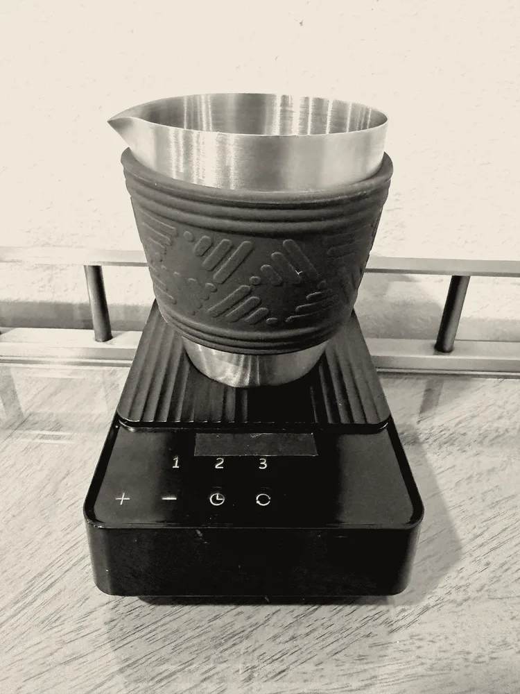
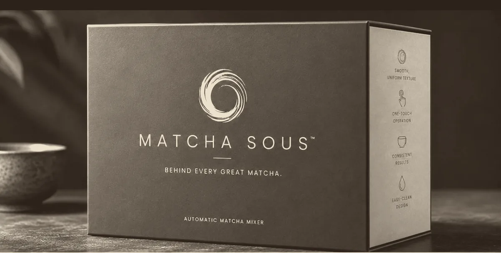
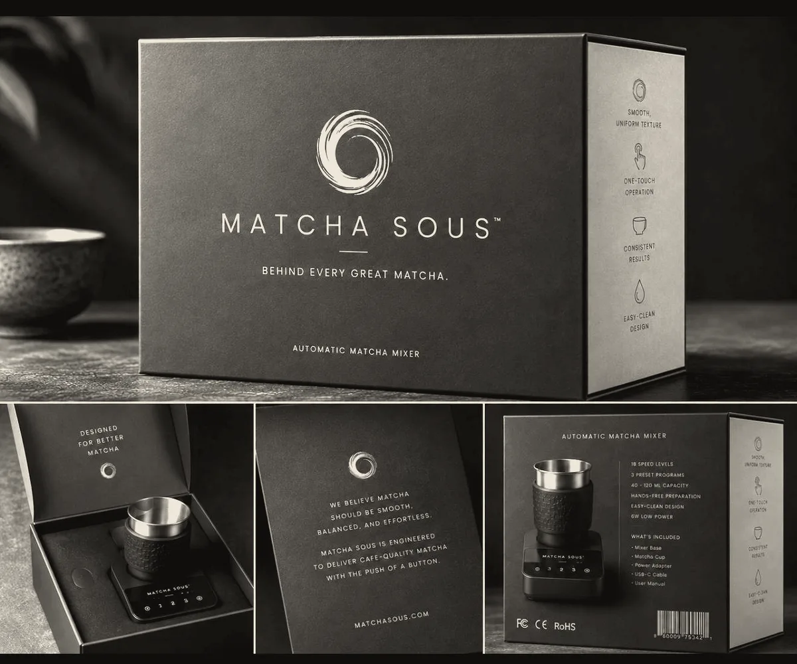

The chasen’s hand, made constant.
An 18-speed vortex reproduces the whisk-stroke faster and steadier than any wrist — dense, café-quality foam in about thirty seconds, identical at bowl one and bowl one thousand.

Technique is the bottleneck.
Good matcha fails at the whisk, not the tea. Suspension and foam depend on stroke speed a wrist can hold for seconds — not every morning, on demand.
Repeatable texture
The vortex holds the exact agitation rate that suspends the powder and builds microfoam — the variable a hand can’t fix. Same density at dawn and at close.
Thirty seconds, hands-free
Fill to the etched line, choose a preset, walk away. It finishes on its own timer while you steam milk, pull a shot, or do nothing at all.
Built like an instrument
Food-grade stainless vessel, contactless drive, one USB-C cable. Rinse the vessel, wipe the base — nothing delicate to reshape or dry.
The instrument, plainly.



What the wrist costs you.
The bamboo chasen is a beautiful tool with an unforgiving learning curve. Here is the same bowl, both ways.
Three moves, no technique.
Fill
Sift 1–2 tsp of matcha into the vessel and add water to an etched guide — 40, 80 or 120 ml.
Select
Seat the vessel and choose a preset — or dial any of 18 speeds, from a gentle stir to a dense latte base.
Pour
The timer stops the vortex at the mark. Pour a smooth, even bowl through the drawn spout.
Matcha Sous — precision electric whisk
First edition · matte black / stainless
- Mixer base backlit controls
- Matcha cup stainless · 40–120 ml
- Power adapter USB-C
- USB-C cable
- User manual
Asked, answered.
Does it really replace the bamboo chasen?
For the result, yes: the vortex reproduces the fast, shallow agitation a chasen delivers — without the technique or the fatigue. If you keep a chasen for the ceremony of it, the MS-01 simply becomes the tool for every other bowl.
What matcha should I use?
Any good ceremonial or culinary matcha. Sift 1–2 tsp to help the vortex work fastest; the etched 40–120 ml guides take care of ratios.
Can it build a latte base, hot and iced?
Yes. The upper speeds whip a small volume into a dense concentrate made to pour over milk or ice. Whisk with water first; add the rest after.
How do I clean it?
Rinse the stainless cup and whisk by hand and wipe the base with a damp cloth. The drive is contactless, so there is no seal or socket to scrub.